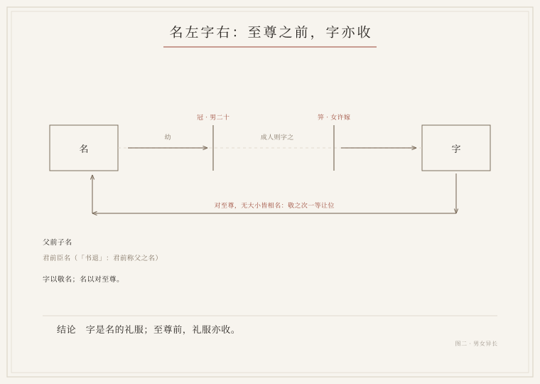

曲礼上 · 一·五十八 · 第 56 课
男女各排各的次序，男子一支伯仲叔季，女子一支伯仲叔季，不混行。男子二十加冠而取字，女子许嫁加笄而取字；字一成，人便算成人。而在父前、君前，字也不得用，仍称名。
说什么事：男女异长。父前子名，君前臣名。女子许嫁，笄而字。
落在哪一层：教。上节讲名之避，此节讲名与字之分。
为何编在此位：一·五十七讲「取什么字」，此节讲「何时称名、何时称字」。
【经】男女異長。父前子名，君前臣名。女子許嫁，笄而字。
【注】各自為伯、季也。男子二十，冠而字，成人矣，敬其名。對至尊，無大小皆相名。以許嫁為成人。
男女异长 注「各自为伯、季也」。疏引《冠礼》加字之辞「伯某甫，仲叔季，唯其所当」，又引《檀弓》「幼名，冠字，五十以伯仲」。男女各有伯仲叔季之序，两序不相统。
嫡长称伯，庶长称孟 《礼纬》说。疏引之，是排行之内的又一层分别。
父前子名 注「对至尊，无大小皆相名」。在父之前，子不得以字自称，父亦称子之名，不以字。
君前臣名 同上。疏举鄢陵之战：栾书之子针，对晋侯而称其父曰「书退」——君前不称父之字。
女子许嫁，笄而字 注「以许嫁为成人」。男子之成人以冠，女子之成人以许嫁；成人则字之。
男女各自排次序（男子一支、女子一支，各为伯仲叔季）。在父亲面前，儿子称名；在国君面前，臣称名。女子许嫁之后，加笄并取字。
一节三层：一讲排行，二讲名，三讲字。排行分男女，是「别」；名字分老少，是「敬」；而敬到极处，在至尊之前仍归于名。全节的意思可以一句收：字是用来敬名的，名是用来对至尊的。
第一层 男女异长 男女各成一套伯仲叔季，不是谁附属于谁。此条看似小事，实是宗法里的一处秩序：两序并行而不相乱，婚姻、称谓、继承皆有所据。
第二层 冠而字 男子二十而冠，冠而字。注说「成人矣，敬其名」——字之所以生，正为「敬名」：成人之后，平辈不便直呼其名，故以字代。字不是别名，是名的礼服。
第三层 笄而字 女子许嫁而笄而字，成人以许嫁为准。与男子以年为准不同：男子的成人是一道年纪的门，女子的成人是一件事的门。
第四层 父前子名，君前臣名 这一层最见礼的层级：平日以字相敬，而在父前、君前，字亦收起，仍称名。敬有次第，至尊之前，次一等的敬要让位。
与今日何干 今人少用字，然「对谁称名、对谁称字」的分别仍在：正式场合称全名，亲近称小名，对长辈不自称字号。此节给的是一个原理，不是一套称呼表。
| 左 | 右 |
|---|---|
| 男女异长 | 各自为伯仲叔季，两序并行 |
| 父前子名 | 对至尊，不以字 |
| 君前臣名 | 君前称父之名（「书退」） |
| 男子二十 | 冠而字，成人矣 |
| 女子许嫁 | 笄而字，以许嫁为成人 |
| 敬其名 | 字所以敬名；至尊前字亦收 |
画一架两格：上格放一顶冠与一枚簪，冠下有木质冠架；下格放一支笄，笄旁一束未绾的长发与一段素帛。架前案上并放两枚木牌，一枚刻两道横痕（示名），一枚刻一道竖痕（示字）。不画人、不写文字。赭色只在冠缨与笄首。
